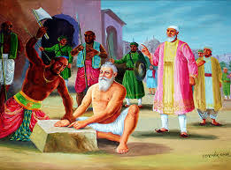
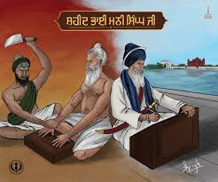

Introduction - Bhai Mani Singh Ji
Bhai Mani Singh Ji (c. 1670 – 1738) was a revered Sikh scholar, Granthi of Harmandir Sahib, and martyr who preserved Sikh scripture and values during a time of persecution[cite: 12]. He is remembered for compiling the Guru Granth Sahib and for his unwavering faith in the face of execution[cite: 12].

Early Life - Bhai Mani Singh Ji
Born in Alipur, Punjab, Bhai Mani Singh Ji came from a devout Sikh family[cite: 12]. At a young age, he came into the service of Guru Har Rai Ji and later served Guru Tegh Bahadur Ji and Guru Gobind Singh Ji[cite: 12]. His deep spiritual inclination and disciplined life earned him the trust of the Gurus[cite: 12].
Service to Guru Gobind Singh Ji by Bhai Mani Singh Ji
Bhai Mani Singh Ji played a vital role in transcribing the Guru Granth Sahib under Guru Gobind Singh Ji’s guidance[cite: 12]. His knowledge of Gurbani and command over Sikh teachings made him a key figure in preserving Sikh scripture for generations to come[cite: 12].
Head Granthi of Harmandir Sahib
After the passing of Guru Gobind Singh Ji, Bhai Mani Singh Ji was appointed as the Granthi of Harmandir Sahib[cite: 12]. He worked to maintain Sikh practices, lead congregations, and organize religious gatherings[cite: 12]. Despite increasing Mughal hostility, he kept the flame of Sikhi alive in Amritsar[cite: 12].

Shaheedi (Martyrdom) - Bhai Mani Singh Ji
In 1738, Bhai Mani Singh Ji sought permission from the Mughals to hold a major Sikh gathering on Bandi Chhor Diwas at Harmandir Sahib, for which he agreed to pay a fee[cite: 12]. However, the Mughals planned a massacre[cite: 12]. Upon discovering this, he cancelled the event and refused to pay[cite: 12]. As a result, he was arrested and ordered to be cut limb by limb[cite: 12].
Even during his brutal execution, Bhai Mani Singh Ji remained calm and recited Gurbani[cite: 12]. His Shaheedi remains one of the most heroic in Sikh history[cite: 12].
Legacy - Bhai Mani Singh Ji
Bhai Mani Singh Ji’s sacrifice preserved Sikh tradition during one of its darkest periods[cite: 12]. His life exemplifies courage, scholarship, and devotion to the Guru’s path[cite: 12]. Today, his martyrdom is remembered across the Sikh world, especially during Bandi Chhor Diwas and Shaheedi commemorations[cite: 12].
